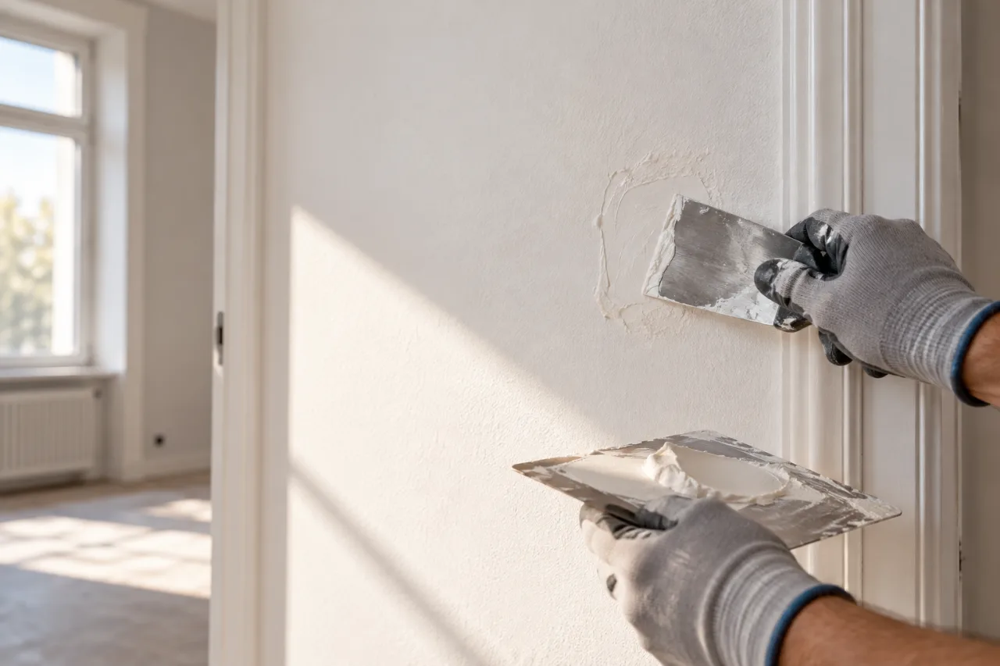

Leistung 02
Reparatur und Instandhaltung in Stuttgart
Für die Arbeiten, die nicht groß genug für ein eigenes Projekt sind – aber auch nicht liegen bleiben sollten. Ein Foto und zwei Sätze reichen für den Anfang.

Aus dem Alltag
Kommt Ihnen das bekannt vor?
Wählen Sie Ihren Fall – das Formular ist dann schon vorausgefüllt. Ist Ihr Anliegen nicht dabei, beschreiben Sie es einfach.
Tür schleift oder schließt nicht
Bänder nachstellen, Schließblech anpassen, Zarge prüfen.
Das ist mein Fall : Tür schleift oder schließt nicht anfragenLoch oder Riss in der Wand
Dübellöcher, Stoßstellen, Risse – ausbessern, bis man nichts mehr sieht.
Das ist mein Fall : Loch oder Riss in der Wand anfragenDelle in der Trockenbauwand
Beschädigtes Stück ausschneiden, neu einsetzen, spachteln.
Das ist mein Fall : Delle in der Trockenbauwand anfragenSilikonfuge erneuern
Alte Fuge in Bad oder Küche entfernen und neu ziehen.
Das ist mein Fall : Silikonfuge erneuern anfragenRegal, Spiegel oder Garderobe
Fachgerecht befestigen – passend zum Untergrund.
Das ist mein Fall : Regal, Spiegel oder Garderobe anfragenMöbel aufbauen
Schränke und Regale aufbauen, ausrichten, sichern.
Das ist mein Fall : Möbel aufbauen anfragenSockelleiste lose oder fehlt
Befestigen, ersetzen, Übergänge sauber schließen.
Das ist mein Fall : Sockelleiste lose oder fehlt anfragenWand nach Wasserschaden
Wenn die Ursache behoben ist: trocknen lassen, ausbessern, schließen.
Das ist mein Fall : Wand nach Wasserschaden anfragen
Offener Punkt
[FREIGABE ERFORDERLICH: Alltagsfälle bestätigen. Arbeiten, die einem zulassungspflichtigen Handwerk zuzuordnen sind, nur nach Klärung mit der Handwerkskammer aufnehmen.]
So einfach geht es
Drei Schritte bis zur Antwort
Foto machen
Ein Bild der Stelle aus etwa zwei Metern, eines aus der Nähe. Mehr braucht es meist nicht.
Kurz beschreiben
Was ist passiert, wo ist es, wie dringend? Stichworte reichen – auch Ihre Postleitzahl hilft.
Rückruf oder Termin
Wir melden uns mit einer Einschätzung. Auf Wunsch rufen wir Sie zu einer passenden Zeit zurück.
Im Detail
Was bei einer Ausbesserung passiert
Damit man hinterher nichts mehr sieht, wird nicht einfach zugespachtelt: Die Stelle wird sauber vorbereitet, hinterlegt, geschlossen und geschliffen.
- Beschädigte Stelle
- Sauber ausschneiden und hinterlegen
- Plattenstück einsetzen, verschrauben, spachteln
- Schleifen – fertig für den Anstrich
Lohnt sich eine Anfrage für so etwas Kleines? Ja. Und wenn es nicht zu uns passt, sagen wir es Ihnen direkt.
Abgrenzung
Was ein Fachbetrieb übernimmt
- Notdienst rund um die Uhr
- Elektro-, Gas- und Wasserinstallation
- Ursachenbeseitigung bei Wasserschäden – das ist Sache eines Installationsbetriebs
Einsatzgebiet
Reparaturen in Stuttgart und Umgebung
Auch für eine einzelne Reparatur kommen wir vorbei – in Stuttgart und in den Städten und Gemeinden im Umkreis von etwa 30 Kilometern.
- Stuttgart
- Esslingen
- Ludwigsburg
- Böblingen
- Sindelfingen
- Leonberg
- Fellbach
- Waiblingen
- Filderstadt
Fragen
Häufig gefragt
Lohnt sich eine Anfrage auch für eine kleine Arbeit?
Ja. Ein Großteil unserer Aufträge sind überschaubare Arbeiten: eine Wand ergänzen, eine Decke ausbessern, einen Raum für neue Mieter herrichten. Schreiben Sie uns, was ansteht – wenn es nicht zu uns passt, sagen wir Ihnen das direkt.
Kann ich die Kosten steuerlich geltend machen?
Für Handwerkerleistungen im eigenen Haushalt können Privatpersonen nach § 35a Einkommensteuergesetz 20 Prozent der Arbeitskosten, höchstens 1.200 Euro im Jahr, direkt von der Steuer abziehen. Voraussetzung sind eine Rechnung und eine Zahlung per Überweisung. Den Lohnanteil weisen wir auf der Rechnung gesondert aus. Ob die Voraussetzungen in Ihrem Fall vorliegen, klären Sie bitte mit Ihrer Steuerberatung.
Übernehmen Sie auch Elektro-, Gas- oder Wasserinstallationen?
Nein, nicht selbst. Arbeiten an Elektro-, Gas- und Wasserinstallationen sind eingetragenen Fachbetrieben vorbehalten. Wenn solche Arbeiten anfallen, stellen wir den Kontakt zu einem Partnerbetrieb her oder stimmen die Arbeiten mit ihm ab.
Was passiert mit den Fotos, die ich hochlade?
Die Fotos werden zusammen mit Ihrer Anfrage per E-Mail an uns übermittelt und nur für die Einschätzung Ihres Vorhabens verwendet – nicht veröffentlicht und nicht weitergegeben. Bitte fotografieren Sie keine Personen. Details stehen in der Datenschutzerklärung.
Reparatur
Schicken Sie uns ein Foto.
Ein Bild und zwei Sätze genügen für eine erste Einschätzung. Wenn Sie möchten, rufen wir Sie zurück.